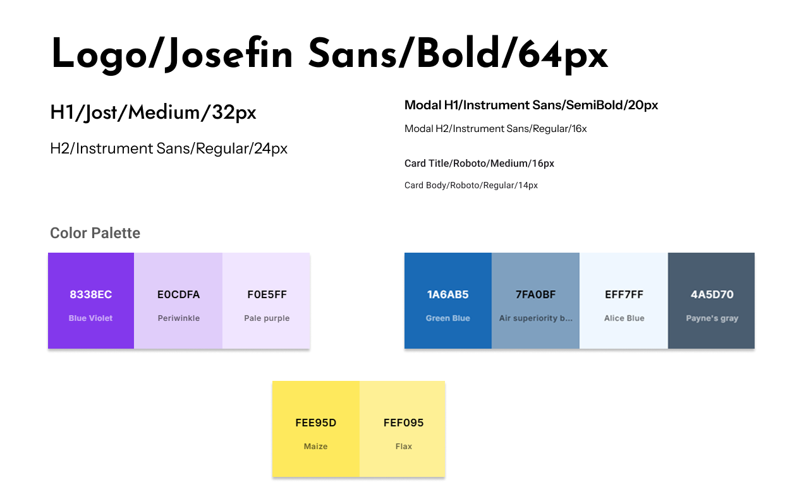
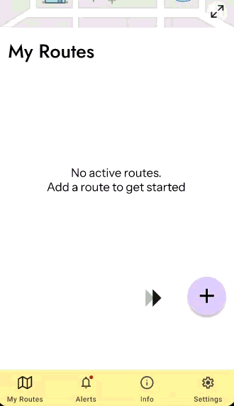
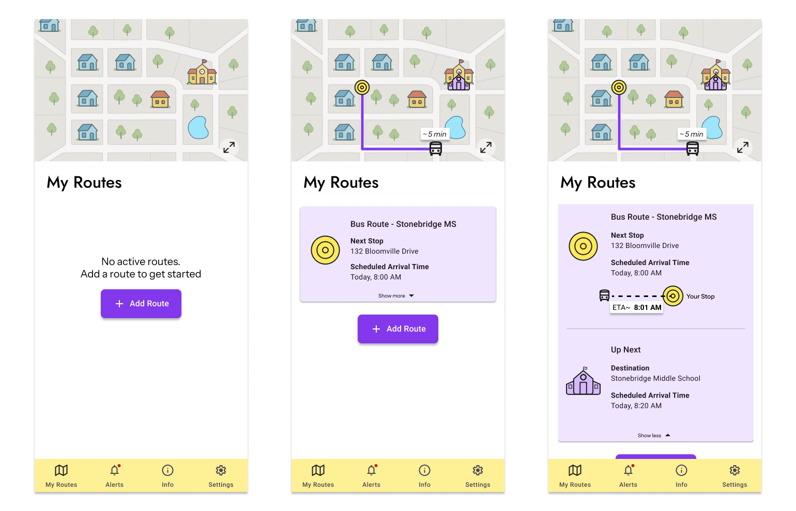
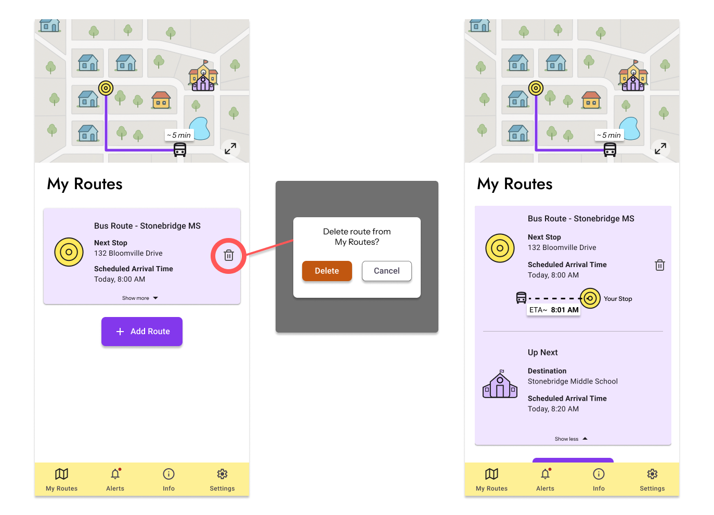
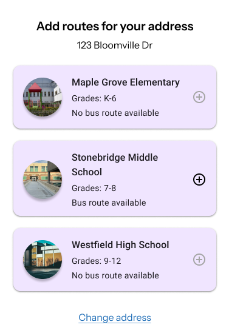

| Role | Product Designer |
| Duration | 2 months (on/off) |
| Tags | Mobile Design, UX Research, Design Process |
Ever been late for the school bus before? Or worse yet, experience that sinking feeling as your bus turns a corner and drives off right as you come into sight of your bus stop? You knew you were running late, but that didn't stop you from trying. Wouldn't it be nice to have a way of knowing where the bus is at all times?
For parents, it's not always easy to find the information you need on transportation, bus stops, bus times, etc. If you're lucky, there might be a convenient link somewhere on your child's school website. But more often than not, you will likely have to dig through the pages or resort to a search to find what you need. Wouldn't it be helpful to have all that information in one place, organized in a structured, easy to use medium?
Enter NextStop, a mobile app designed to be your one-stop-shop for all things related to bus information.
The first thing I needed to do was to fully understand the problems I had to address. While I knew generally what should be in the bus app, I didn't know the specific pain points and challenges faced by users. With this in mind, I thought of some interview questions I wanted to ask my target audience to better understand their needs.
I interviewed 2 parents and 1 student for this part. During the interview, I realized that being able to ask great follow-up questions is a crucial skill for uncovering deeper insights. Even though I had prepared questions in advance, I never really knew what responses I would get from my interviewees. Being adaptable and quick to jump on key points would help me get a clearer picture of the problem and allow me to create more accurate personas.


Once I had defined user personas, I created two user journey maps for the current flow they take to find bus route information or to receive bus updates, helping me understand their pain points and behaviors from their perspective.


Having created the journey maps and personas, it was time to define the main problems the app would solve. During the prior interviews, I had written a one sentence user story for each person highlighting their needs. Taking these into account as well as the information I gathered from the journey maps, I formulated them into problem statements which explicitly lays out their problem to solve.
It was interesting for me to see the similarities and differences between the user stories and problem statements. While the user story focuses on the user's needs and goals from their perspective, the problem statement frames the issue in a way that highlights the user's challenges in a specific context from an objective, third-person perspective, giving it a concreteness that makes it more tangible to address.
| User Story | As a busy mother of two, I would like an easy way to access all relevant and up-to-date bus related information in one place so that I don't have to spend time searching for them. |
| Problem Statement | Tammy is a busy mother who needs a quick and convenient way of accessing bus information because it will save her from having to spend extra mental bandwidth scouring for that information. |
| User Story | As a student who primarily relies on the bus for transportation to and from school, I need a way to know the status of my bus in order to feel at ease when I'm waiting at the bus stop. |
| Problem Statement | Billy is a student who needs real-time updates on bus status so he can plan his arrival at the bus stop and avoid unnecessary waiting or missed buses. |
| User Story | As a mother who isn't great with technology, it would help me if the bus route map/app is easy to use so that I can quickly get the information I need. |
| Problem Statement | Janet needs a user-friendly bus information app because a complicated interface makes it difficult for her to find the information she needs in a timely manner. |
Based on the user stories and problem statements, I came up with the following hypotheses:
Through these hypothesis statements, I determined the focus for my app, summarized into one value proposition:
NextStop provides a streamlined experience for parents and students to get the bus information they need at their fingertips. It sports an intuitive interface and added features like bus location tracking and estimated arrival times so that no one will be in the dark about their bus's whereabouts.
Now that I had a clear idea of the problems I'm solving for, I needed to list out the core app requirements that would address them. Having a list of must have features ready as I start sketching out potential designs will help ensure that I don't forget any important features.
Once I had a better idea of what the app needed, I started planning the layout of the app. To do this, I created an information architecture diagram to map out the structure and high-level flow of the app.

Using the IA diagram as a guide, I sketched out wireframes for the main screens of the app.
Starting off with the welcome screen where users are greeted with a friendly message and prompted to enter their school district and address, the next screen that displays would be the My Routes screen. Here, users can add bus routes for their address and view route information such as arrival times and stop location. When users attempt to add a route, it will direct them to the Route Search screen where they can make their selection. Once a route is selected, they will be taken back to the My Routes screen.
The notifications screen will display important updates and alerts for users, such as bus delays, weather updates, or school closures. Users will see an alert bubble pop up on the bottom menu icon to indicate new notifications.
The information screen will provide users with contact information for schools in the chosen district and transportation department. FAQs can also be found on this screen.
Finally, the app will include a screen where users can submit any concerns or feedback to the district.


In my initial designs, I used the hamburger menu in my wireframes, thinking it would be a good way to save space on smaller screens. However, I later realized that this approach might not be the best for discoverability, as users don't immediately see all available options.
To address this, I explored using a tabbed navigation pattern as well. I felt that the number of functions my app offered did not warrant the use of a hamburger menu. With a bottom menu, users could easily switch between different sections of the app without having to open and close a menu.

Also during the wireframing process, I found the "Search Routes" screen to be redundant. The problem was if users are adding routes from the "My Routes" screen, why should they be taken away to a different screen just to perform that task? Why not contain that functionality within the "My Routes" screen?
They are already inputting their address at the start during the app setup. It's unlikely users would want to search for a district they're not zoned for, but in the event they needed to switch districts or addresses, it would make more sense for them to do so in a "Settings" page. Once updated, they will have the option to add routes for their new location on the "My Routes" screen.
Another thing I realized was that maybe having a "Submit a Concern" screen may not be necessary. If a parent or student had an issue they wanted to bring up, they can reference the contact info from the information screen and submit their concern through the appropriate channels, so the additional screen dedicated for that purpose seemed to be extraneous.
With these considerations in mind, I aimed to streamline the user experience and reduce unnecessary screens.
With the wireframes completed, I was ready to test them out with users. I built a simple lo-fi prototype referencing the completed wireframes and conducted a usability study with 4 participants to identify any usability issues and gather feedback on the functionality of the app.

My study plan aimed to answer these key research questions:
To measure the effectiveness of the app designs, I had each participant complete a series of tasks which would then be evaluated against two main KPIs: time on task and conversion rates. As they performed each task, they were encouraged to think aloud and share their thought process. The time of completion of each task was then recorded and the difficulty of the task was rated on a scale from 1 to 3 as follows:
I had each participant complete 4 tasks, each corresponding to a defining feature within the app:
During each task, I took note of my observations and asked follow-up questions like "Was this feature useful? Why or why not?" and "What was easy and what was challenging?"
At the end of the study, I gathered feedback and overall impressions from each participant. I also asked the following research wrap up questions:
After the study, I analyzed the data I collected and organized similar findings and comments from participants into groups of sticky notes. I wanted to identify patterns from the research to see where users tended to struggle or excel within the app.
From this exercise, I identified several insights:
Some of the groupings in the affinity diagram, like the one on "unresponsive welcome page elements", had more to do with missing features in the low-fidelity prototype rather than actual usability issues related to the design of the app. As such, those groupings were given less weight when deliberating design enhancements.
Based on the insights gathered from the study, I made the following design recommendations:
Having tested the prototype and gathered key insights, I proceeded to building a high-fidelity prototype of the NextStop app.
Before I started designing anything though, I needed to first determine the colors and various fonts for the app. To ensure that my app remained consistent throughout, I created a style guide that outlined the color palette and typography to be used.
Other than the color of school buses being the source of inspiration, I chose yellow and purple as the primary colors for the app as they conveyed youthfulness and energy which I thought was befitting of the school setting.
Aesthetics aside, I also needed to ensure the readability of the text. It had to be clearly visible, following WCAG 2.1 standards for 4.5:1 contrast ratio.
As I designed the mockups in Figma, I created reusable components to maintain consistency across the app. I also leveraged existing design libraries like Google's Material Design components to help speed up the process.
Once I had completed the mockup, I wired up the interactions across all the screens to construct a high-fidelity version of the prototype to present to stakeholders.
Having presented the mockups to interested parties, I gathered feedback and made several revisions to improve the design.
There were two things about the add button I had to address in this revision. The first was the location of the button. The initial design was a floating action button located in the bottom right corner of the screen. While this is a commonly used pattern, it wasn't the most intuitive location for users to find it.
One of the comments on the affinity diagram mentioned the following:
"I think it would be helpful to have a tutorial at the start so I understand what I'm doing."
My initial solution to this was to keep the location of the button, but draw the user's attention to the add button with an arrow animation that appears after a few seconds from the moment the user navigates to the My Routes screen.
I didn't consider the possibility of moving the button to a more discoverable location but rather focused on enhancing its visibility in the original spot. I had thought that if I moved the button to the center, the tradeoff would be the button also moving with the contents in the screen as they expand or contract. On the other hand, keeping it in the original position meant it would always be in view in the same spot.
However, once I went back to the drawing board and implemented this design, I found that it actually fit the screen quite well. If moving the button to the center aids discoverability, I would rather go with this solution as it addresses the root problem of unintuitive action items on the screen rather than applying a band-aid fix to an existing design.
The second issue I had to address was the dual functionality of the "add" button once a route had been added. In the original design, the button would transform into a plus/minus button, signaling to the user that they could also remove routes if they pressed that button. When pressed, it would open a add/remove route modal where the previously added route would display a minus button which the user can tap and remove the route from their list.
The issue here is the inconsistency of the button's behavior. While there isn't much problem functionally, it is better to limit this where possible to avoid potential confusion for the user. This can be accomplished by restricting the button's functionality to a single action- the addition of routes.
One solution that I had thought of while I was designing the first hi-fi mockup was to include a trash can icon on the rightmost side of the route card. Users could delete their route by tapping on this icon and they could do so without having to navigate to another subscreen. But I didn't want the user to accidentally remove a route, and I thought adding a confirmation screen wouldn't be much different than having the user go through the existing flow as that also opened a modal.
Something I had overlooked though in my prior assessment was that reusing a common design pattern such as the trash can icon could help users quickly recognize how they can remove a route. As for the confirmation modal, it's just another standard pattern that users are likely familiar with, not contributing much more complexity to the overall design of the screen.
And like how it was with trying out the new add button design, I found that when I tried implementing the trash can icon and modal confirmation flow, it actually made more sense to me and seemed to be an improvement over the old design.
The add route modal that appears when the user attempts to add a route also had a few problems of its own. The overarching issue was how the routes were presented. All the routes being the same color, for example, even for ones which are unavailable for the users to add, contributes to added cognitive complexity for users navigating the screen.
In the original design, the distinguishing element for an addable route was the presence of a dark gray plus sign. Routes that could not be added had a disabled light gray plus sign. In addition to this, there was a tiny description that also mentioned the availability of a route.
However, the reality is users don't try to read or pay attention to every detail present when they can avoid it. Users tend to find the quickest way to accomplish their task, and it is my job as a designer to make it as easy as possible for them to do what they need to do.
In this case, I can do 2 things to help my users quickly understand what they see and find the correct corresponding action to what they want to do:
Upon making the change, I can see that the available routes are now more prominent and easier to identify, while the unavailable routes are clearly separated and less distracting. This should help users quickly find the routes they can add without having to evaluate each route option one by one.
This was a fun project to work on and my first serious attempt taking on a UX project from start to finish. I've learned much throughout the project as I worked at it on and off in my spare time over the course of 2 months.
If I were to continue working on this project, I would want to further explore and test the design of the route map and the overlay elements. Due to time constraints, I had to limit the amount of time I spent on this aspect.
Another thing I would want to look into is how I can enhance the route cards in the My Routes screen. I'm not 100% satisfied with how they currently look and function, and I believe there is still room for improvement. With more cycles of design and user testing, I could arrive at a more polished solution.
Through this project, I found out how crucial asking the right questions during the research phase is to understand the right problems to solve. If this part isn't done right, the entire premise of the project falls apart.
I also learned the importance of user research and user feedback and how initial assumptions could be challenged during testing.
With the feedback and insights obtained, the designs are then refined, tested, and evaluated again, and in this way the product continues to evolve and improve over time.